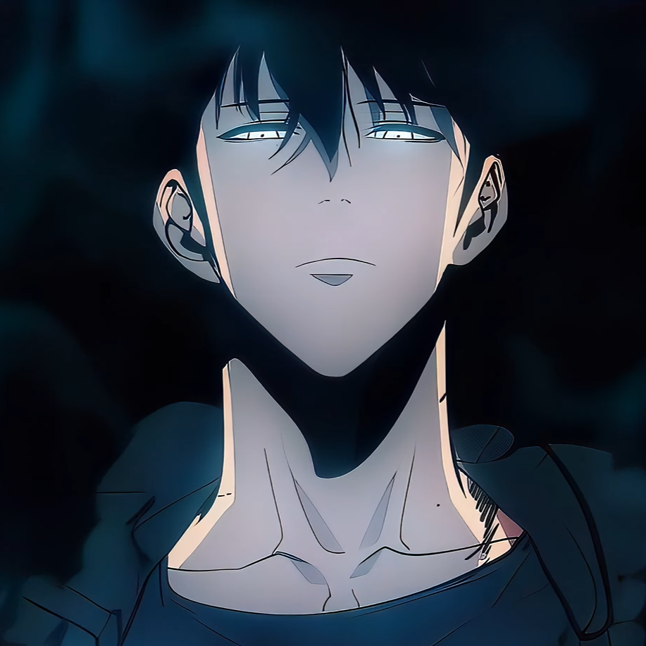

About Violet
A former soldier who was enlisted in the Leidenschaftlich army and fought in the war
Violet's characteristics
- She's a very stoic person
- She's calm in most situations
- She's being mistaken as an apathic person
Scene of violet showing her self defense skills
Violet's Companions
-  Sung Jin-woo
-
 Ayato
Ayato
- Hanako